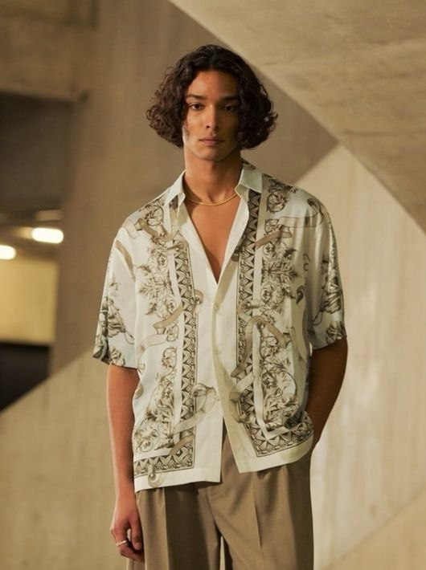
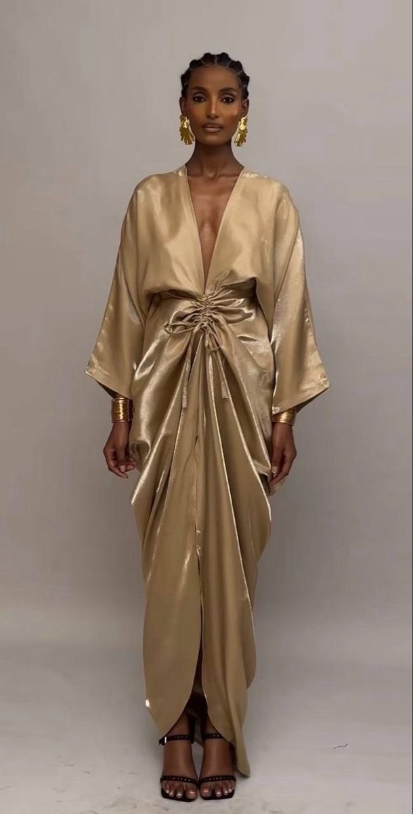
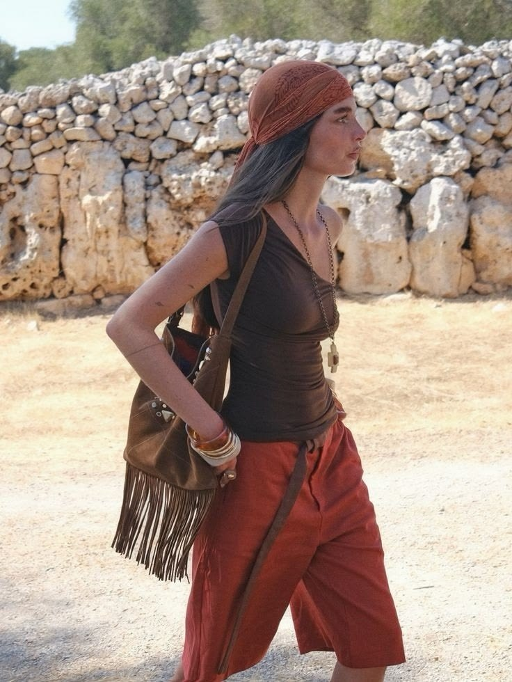
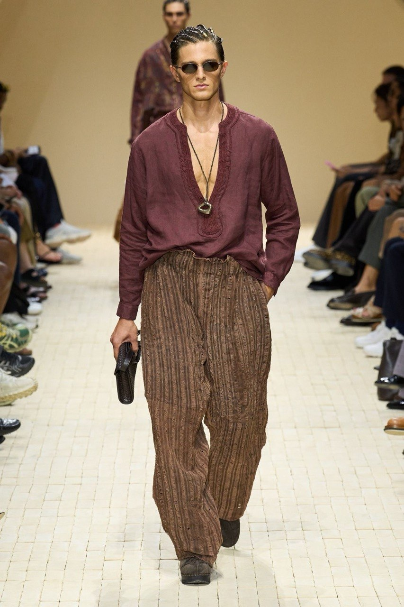
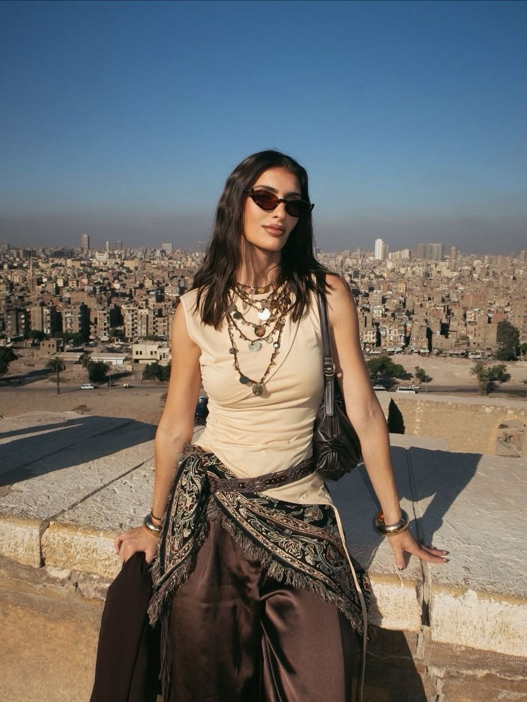
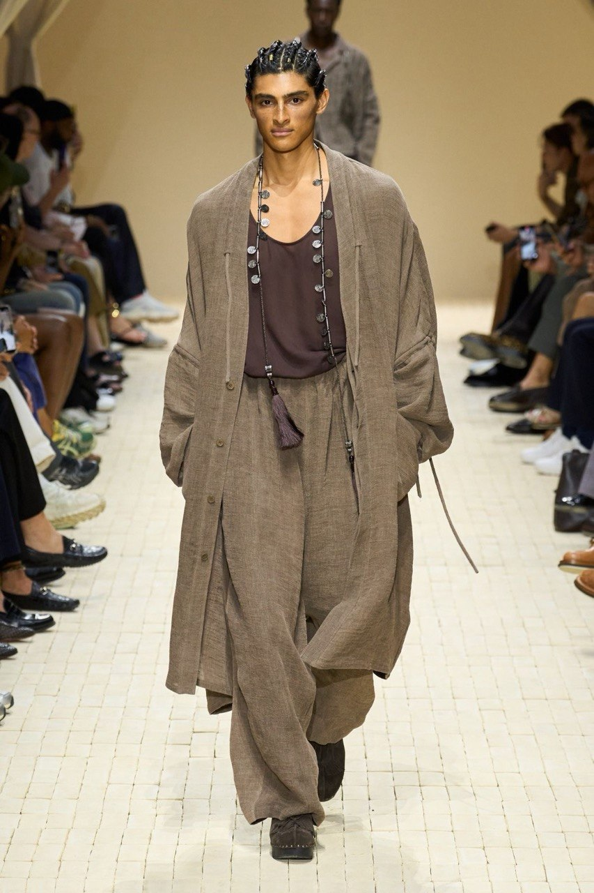
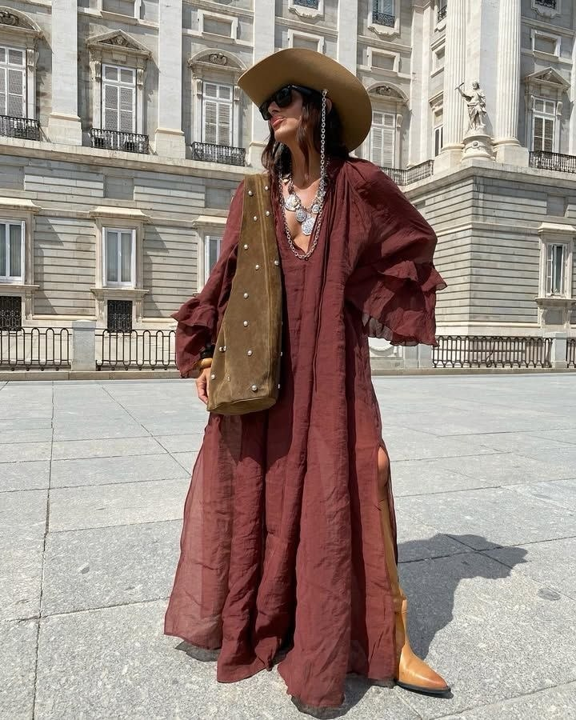
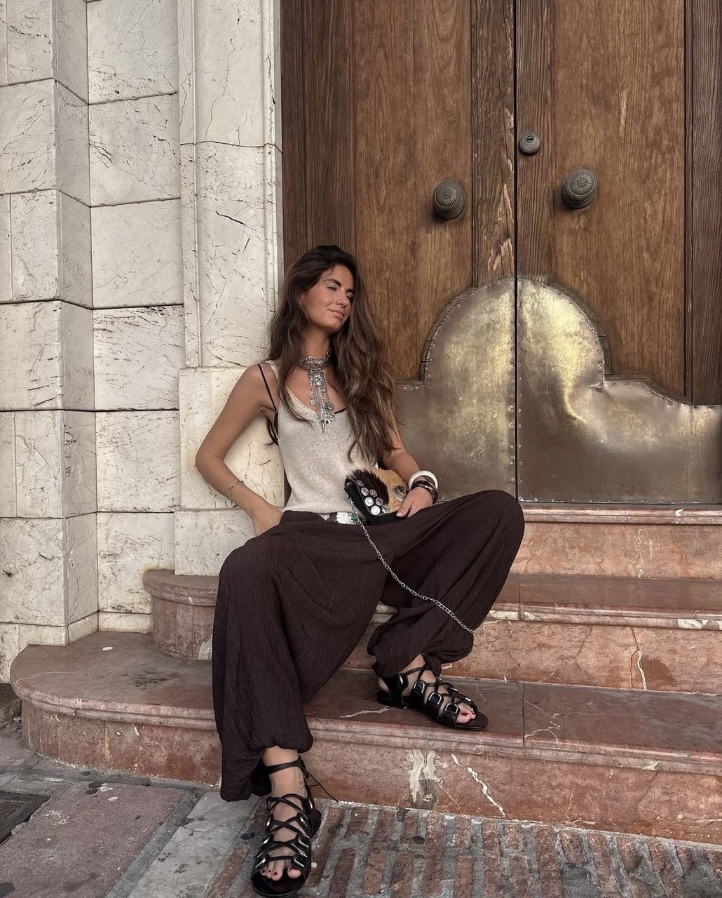
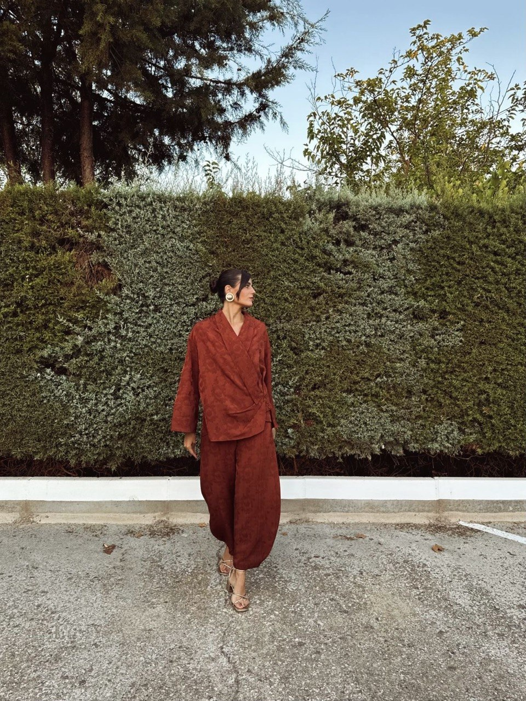

СВАДЬБА РОМЫ И ЛИЗЫ
Есть вечера, которые остаются с нами навсегда.
Мы будем счастливы разделить один из них с вами.
Roma & Liza
Mega Dacha
Almaty
горы · музыка · ужин · закат · танцы
под открытым небом
Дресс код:
Восточно - европейский · богемный · расслабленный
Invitation
Дом - это состояние рядом друг с другом
мы приглашаем вас в пространство, внутри которого живет наша любовь.
Есть люди, для которых дом - это место.
А есть люди, для которых дом -
это состояние рядом друг с другом.
Его можно найти в поездке по горам, под дождём в лодке, на закате за ужином или в кровати с кошкой.
Тогда дом оказывается не пространством,
а присутствием.
Подробно
Когда мы встретимся под светом момента
Transfer
Путешествие начинается со встречи
Любимые гости, для вашего удобства мы организовали трансфер до места проведения праздника.
Сбор гостей
13:30
Просим быть вовремя, чтобы дорога к нашему месту началась спокойно и красиво.
Открыть точку сбораВдохновение для дресс-кода
Богемный. Экзотический . Восточный
Расслабленный . Текстурный . Чувственный
Нам бы очень хотелось видеть вас в образах, которые станут частью атмосферы вечера: теплые глубокие оттенки, мягкие текстурные ткани, свободные силуэты, винтажные детали, восточный акцент. И побольше аксессуаров:)
На площадке натуральное земляное покрытие, поэтому для вашего комфорта рекомендуем выбрать обувь на плоской подошве или устойчивом широком каблуке.
wine
burgundy
velvet
sandal
sunset
earth
grass
white silk
candle gold









RSVP
Нам очень важна обратная связь
Если вы собираетесь прийти с близким, можете повторно заполнить анкету за него - обновив страницу.
Gift note
Дорогие гости!
Ваше присутствие на нашем празднике - самый ценный подарок для нас.
Если вы захотите порадовать нас дополнительно, будем благодарны за подарок в денежном формате. Это поможет нам осуществить наши семейные мечты и планы.
До встречи под теплым светом фонарей.
Пространство, в котором любовь ощущается как дом.